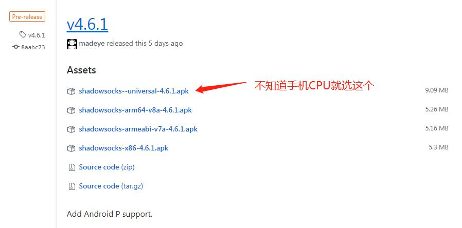

软件准备
首先，点击下方按钮下载安卓版的客户端 Shadowsocks 。
如果您是用微信打开的话，先点击手机右上角的三个点，然后选择手机自带的浏览器打开，这样才能下载成功。
官方提供了几个不同版本，根据你手机的cpu选择合适的apk安装包（如果你也不知道，那就选择结尾是universal的就好啦）

安装 Shadowsocks
如果是手机下载的，可以用手机里的文件管理器，找到该 APK 安装；如果是电脑下载的，请导入到手机里进行安装。安装完毕手机桌面会出现一个叫“影梭”的 APP。这个“影梭”就是安卓版 Shadowsocks 的中文名字。
导入配置
影梭首页和删除默认配置
打开影梭，你看到的首页是这个样子。它会默认一个配置，这个配置是没有用的，可以左滑或者右滑删除掉。
添加新配置
点击右上角的加号，选择”手动设置”。
- 如果安装了PC端的ss，也可以选择扫描二维码导入，非常方便
填写配置
进入添加配置的设置界面后，按照下图所示，根据服务商给你提供的配置，依次填写。填写完毕后，点击右上角的对号✔️保存。

选中新加配置
添加完毕返回到软件首页，注意看，首页有了你新添加的配置。注意，配置的最左侧是灰色的，说明未被使用，点击配置，最左侧变为绿色，说明使用该配置（如下图）。同时，如果发现配置填写错误，可以点击右侧的小铅笔再次编辑修改。
启动和关闭。
右下角的小飞机即为开关按钮，如果处于灰色状态，说明是关闭中；可点击打开连接，打开即为绿色。
测试是否连接成功
打开浏览器看看是否能上谷歌了。（强烈建议不要使用国产浏览器，尤其是华为小米自带的浏览器，此处推荐 Chrome，就算用国产的浏览器，推荐使用夸克或Via浏览器）。
最后，恭喜你，自由了。